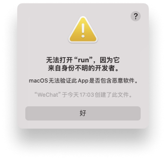
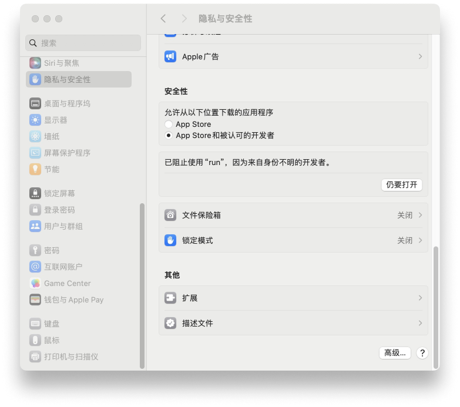
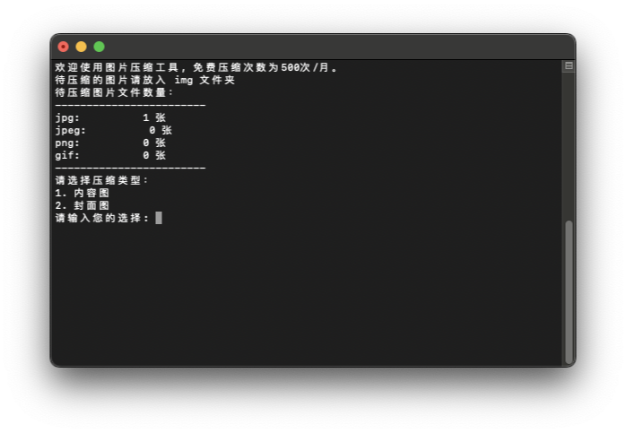

顶部栏 > 格式 > 制作纯文本，或者按快捷键 ⇧⌘T( shift + command + T ) 进入纯文本编辑模式。 输入上一步获取到的 API key，保存的时候,命名为 tinify.key ,将文件保存到程序根目录的 key 文件夹中。 
图片批量自动化压缩和裁剪工具，通过设置图片大小限制，在默认压缩达不到指定压缩率的时候提示转换为webp格式。裁剪缩放使用的是 AI 自动识别，会尽量保持主体内容物居中，一般的照片素材不需要特别的预处理工作即可直接自动化处理。 ### 安装 #### 1. 安装主程序和脚本 复制以下命令到 终端.app 运行
TARGET_DIR="$HOME/Documents/img-tool" #此处设置安装目录
git clone https://github.com/kailous/img-tool "$TARGET_DIR"
cd "$TARGET_DIR"
chmod 777 run
echo "安装完成！"
open "$TARGET_DIR"前往 Tinyify控制台 获取 API key，每个 key 每月有 500 张免费，多余的需要付费使用，或者更换其他账号获取新的 key 。
新建文本文档，顶部栏 > 格式 > 制作纯文本，或者按快捷键 ⇧⌘T( shift + command + T ) 进入纯文本编辑模式。 输入上一步获取到的 API key，保存的时候,命名为 tinify.key ,将文件保存到程序根目录的 key 文件夹中。
本程序使用 shell 脚本编写的个人项目，运行前你可能遇到这样的问题。  你需要在 设置 > 隐私与安全性 下面找到 仍然打开 按钮。点击确认运行即可。  ### 使用 #### 1. 关于配置文件 config.ini 程序的压缩类型使用 config 文件控制，可以方便的根据自己的需求定制。以下是配置文件的说明，实际的配置文件不要带上 #号之后的注释内容。
[内容图] # 压缩类型名称
size=220 # 文件体积限制在什么范围
width=750 # 裁剪的宽度
height=1000 # 裁剪的高度
label=1 # 标签 这里按照序号写需要压缩的文件，请放入根目录的 img 文件夹内，然后双击 run 文件即可运行。根据需求选择对应的类型。 当压缩后的图片超过设置的 size 也就是最大文件体积的时候，会询问是否转换为webp，webp通常在同等质量下，具备更好的压缩率，但实际上压缩过的图片已经达到极限了，有可能转换成 webp 反而体积更大。选择的时候注意对比一下。  压缩完成的文件会在 output 文件夹，img 文件夹内的文件为了保障文件安全，不会自动删除，需要手动清理。不然下次会重复压缩浪费 API key 的使用次数。
💡 tips: run 文件是一个 shell 脚本，为了方便运行删除了sh后缀。图片压缩使用的是 tinypng 的 api。webp 压缩使用的是 webp中的cwebp组件，为了方便非开发者运行，免去安装运行环境，将所有的使用的库和依赖都打包在一起了。使用的时候请保持文件和目录的完整。